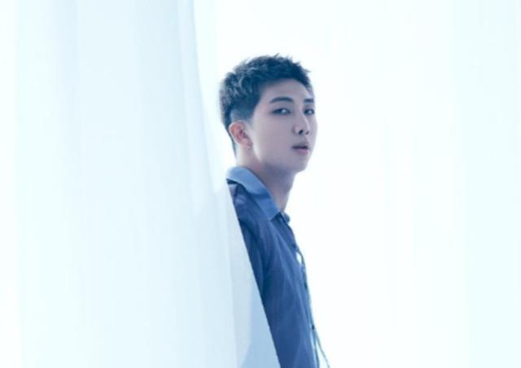
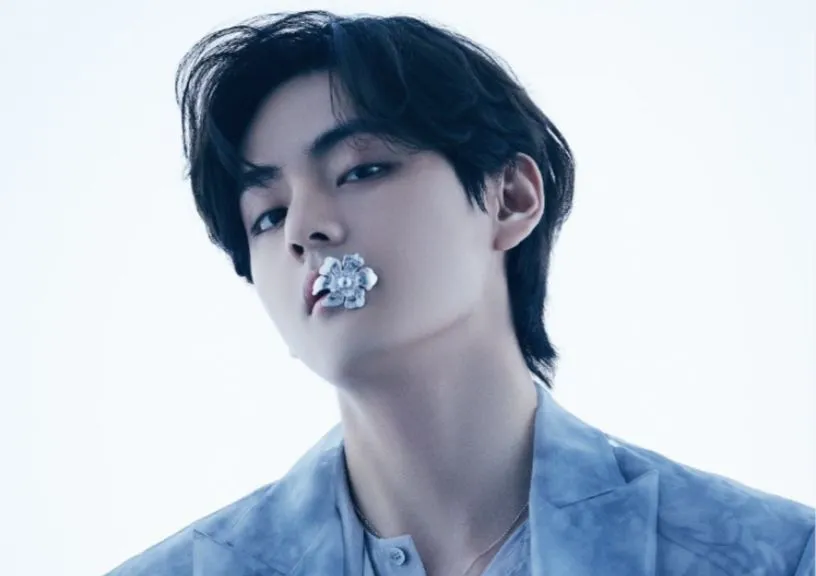
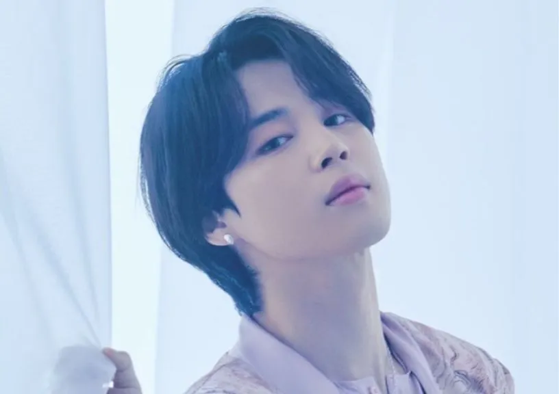
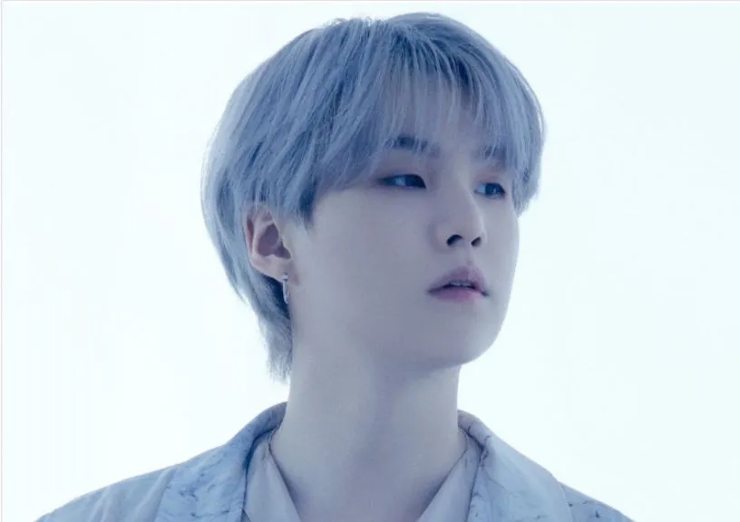
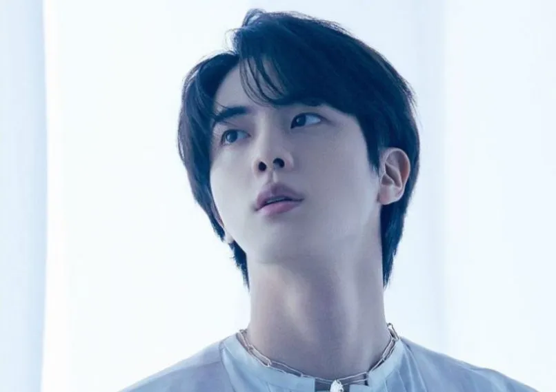

BTS members hanging out in Seoul after a long concert season is over
BTS members showing off new hair styles
BTS members posing in their bedroom
Summary
BTS (Korean: 방탄소년단; RR: Bangtan Sonyeondan), also known as the Bangtan Boys, is a seven-member South Korean boy band that was formed in 2010 and debuted in 2013 under Big Hit Entertainment. The septet—composed of Jin, Suga, J-Hope, RM, Jimin, V, and Jungkook—co-writes and co-produces much of their own output. Originally a hip hop group, their musical style has evolved to include a wide range of genres.
Formation and early years
BTS began its formation in 2010 after Big Hit Entertainment CEO Bang Si-hyuk met with group leader RM and was impressed with his rapping. The lineup was finalized with Jin, Suga, J-Hope, RM, Jimin, V, and Jungkook in 2012 when Jin, the oldest member of the group, was twenty-years-old. Six months prior to their debut, they began to gain attention for their presence on various social media websites, as well as song covers on YouTube and SoundCloud.

Kim Nam Joon

Taehyung

Jimin

Suga

Kim Seok Jin
J-Hope
Jeon Jungkook
Mainstream and international breakthrough
In November 2017, BTS became the first K-pop group to perform at the American Music Awards, raising their profile internationally. That same month, Guinness World Records revealed that BTS had earned a spot in their 2018 edition for "having the world's most Twitter engagements for a music group". In December, they also became the first K-pop group to perform on Dick Clark's New Year's Rockin' Eve to welcome the new year and made their Japanese TV music show debut on TV Asahi's Japan Music Station Super Live.
Cultural Impact
Billboard's Senior Vice President Silvio Pietroluongo said that BTS are comparable to and as influential as the Beatles and the Monkees. Nielsen Music Vice President Helena Kosinski said that "although BTS weren't the first to open the doors to K-Pop worldwide, they were the first to become mainstream. They don't just appeal to young people but also to the 50s and 60s age demographic." As the first non-English speaking artist to make the Global Artist Chart in 2018, BTS had the second and third best-selling albums worldwide and were the second best-selling artists worldwide in terms of physical, digital, and streaming platforms, coming second only to Drake.